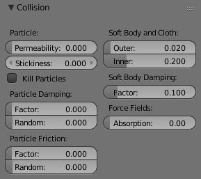
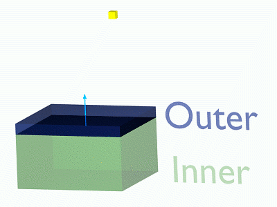

碰撞¶
参考
模式: 物体模式
面板:
粒子, 软体 和 布料 可以与网格物体碰撞. 群体 尝试避免 碰撞 物体。
- 对象需要共享至少一个公共层才能生效。
- 您可以将粒子的影响限制为一组物体（在 力场权重面板).
- 软体物体的变形是困难的，它们经常穿透碰撞物体。
- 头发颗粒忽略偏转物体（但您可以将它们作为考虑到挠度的软体）进行动画化。
如果您更改对象的偏转设置，则必须通过 自由缓存 重新计算粒子，软体或布系统，但这并不是自动完成的。您可以使用 Ctrl-B 来清除所有选定对象的缓存。
选项¶

碰撞面板。
粒子¶
- 渗透率
- 粒子通过网格的分数。
- 粘度
- 多少颗粒粘在物体上。
- 消除粒子
- 影响后删除粒子。
- 阻尼系数
- 碰撞期间的阻尼（与颗粒的速度无关）。
- 阻尼随机
- 随机变化的阻尼。
- 摩擦系数
- 沿着表面运动时的摩擦。
- 摩擦随机
- 摩擦随机变化。

软体顶点与飞机相撞。
力场¶
- 吸收
- 偏转器也可以偏转效应器。您可以使用吸收值指定一些碰撞/偏转器对象，该物体偏转效应器力的特定部分。100％的吸收导致没有力量通过碰撞/偏转器物体。如果您有三个碰撞对象，例如10％，43％和3％，则吸收最终达到50％ \(100 × (1 - 0.1) × (1 - 0.43) × (1 - 0.03)\).
提示¶
- 确保网格表面的法线面向颗粒/点以进行正确的偏转。
- 毛发粒子直接反应强制场，所以如果你使用一个短距离的力场，你不一定需要碰撞。
- 如果您在 粒子编辑模式 中进行编辑，则头发颗粒可以避免其发射网格。所以你至少可以模仿头发碰撞。